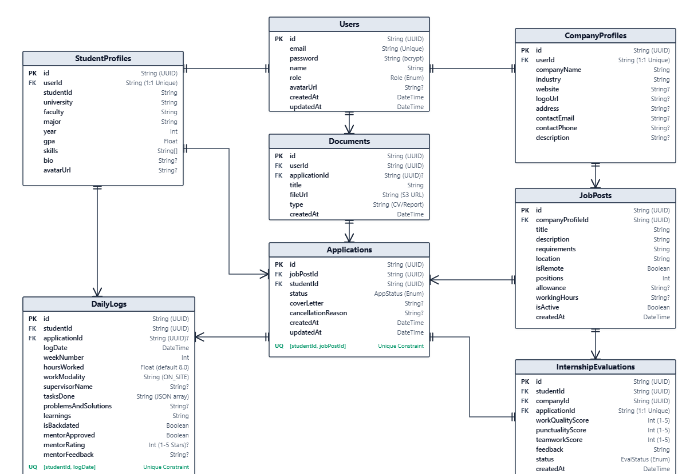
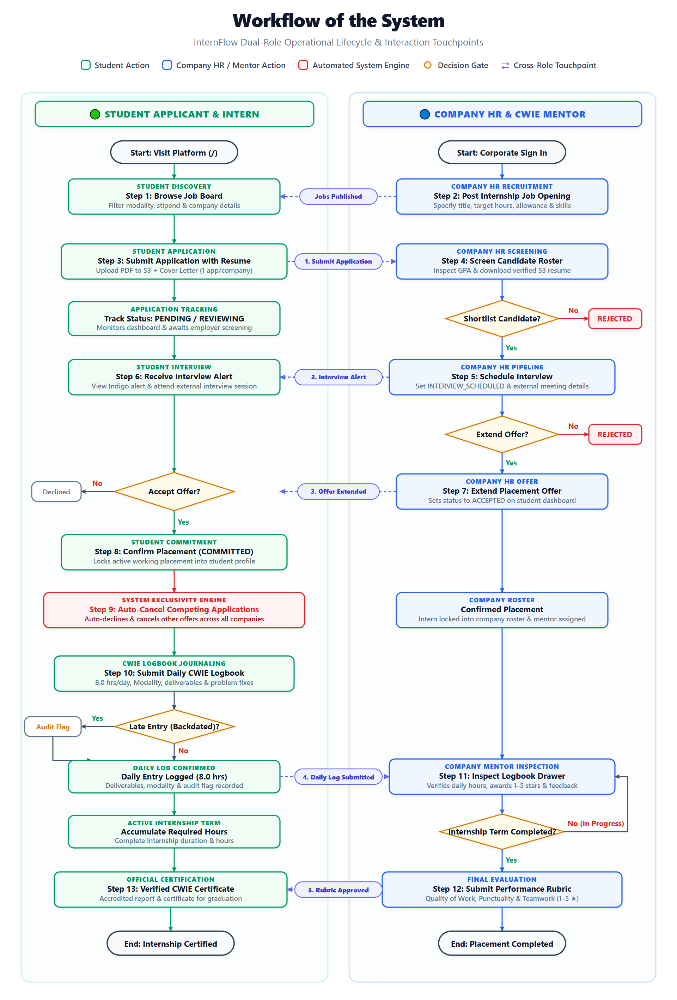
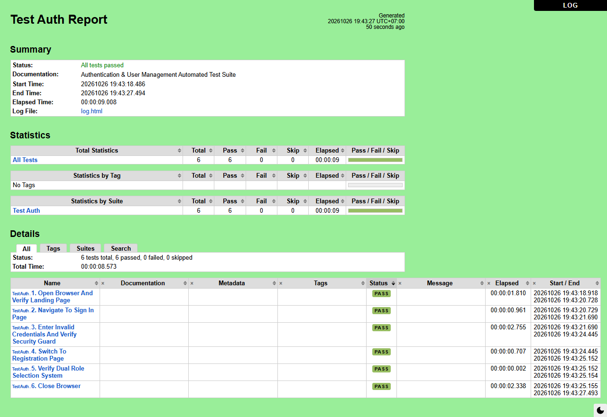
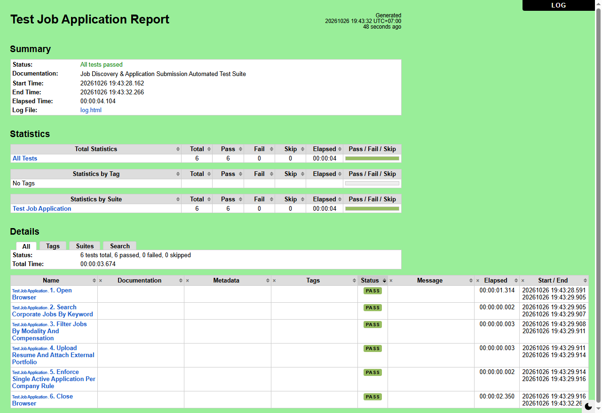
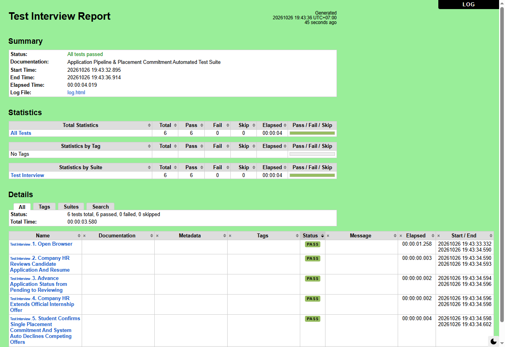
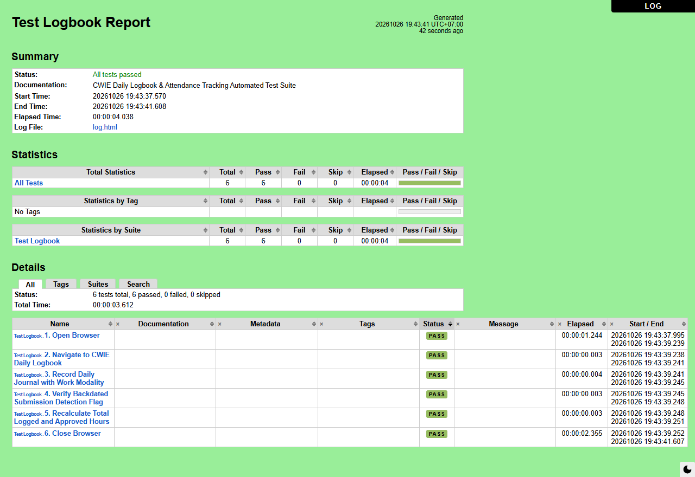
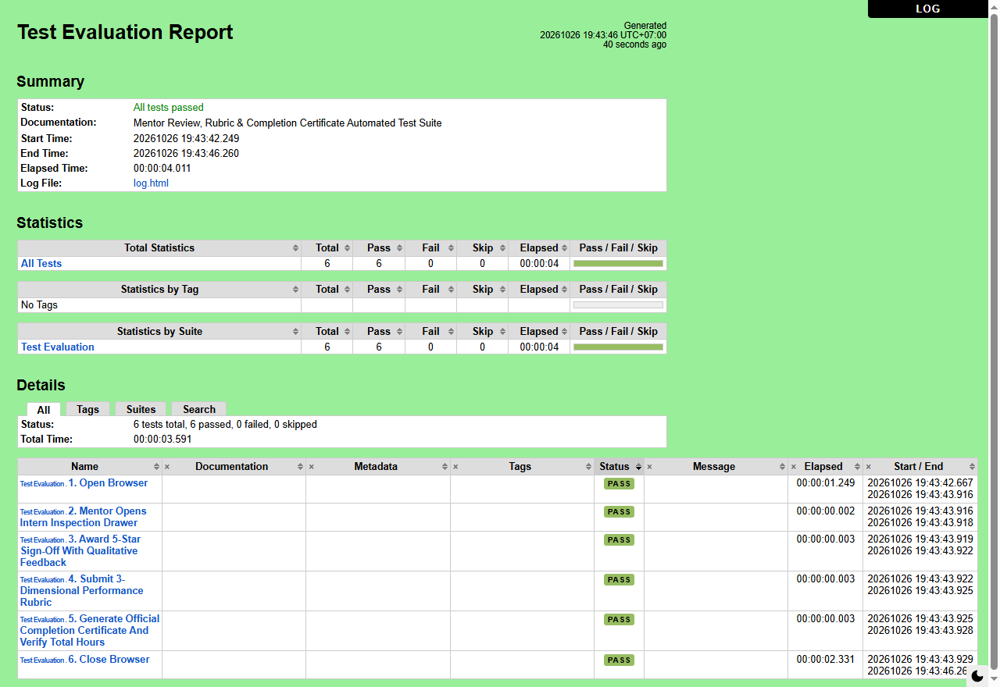

| 6622772869 | Nipparn Penjinda |
| 6622770392 | Trin Kittacharoenchai |
| 6622780144 | Napat Pumim |
| 6622780094 | Thanyawach Keaohan |
| 6622781217 | Thantip Kangwanwanit |
Course: DES424 Cloud-based Application Development
Academic Year: Semester 1, Academic Year 2026
Degree Program: Digital Engineering (DE) / Computer Engineering (CPE)
Submitted To:
Dr. Apichon Witayangkurn
School of Information, Computer and Communication Technology (ICT)
Sirindhorn International Institute of Technology (SIIT), Thammasat University
Date of Submission: October 2026
Students and corporate employers coordinate internship recruitment and operational placements each semester. However, the existing process is predominantly managed through disconnected emails, spreadsheets, messaging applications (e.g., LINE, Discord), and paper forms. This ad-hoc approach creates substantial operational friction: applications are misplaced, candidate statuses remain ambiguous, working hours go unmonitored during the term, and performance assessments are often compiled hurriedly at the conclusion of the placement.
InternFlow is a modern, cloud-native, centralized internship and Cooperative and Work-Integrated Education (CWIE) management platform. It unifies the entire lifecycle of student internships into an accountable, transparent, and auditable digital environment.
On-site, Remote, Hybrid).INTERVIEW_SCHEDULED), offer extension, single-placement exclusivity commitment, through company-approved cancellation.COMMITTED), which automatically declines competing offers, eliminating candidate hoarding and placement abandonment.TH) and English (EN) across all system interfaces, forms, and status notifications.The conventional internship recruitment and monitoring process suffers from several structural inefficiencies:
The InternFlow platform is designed to support three primary user groups:
graph LR
classDef student fill:#e0f2fe,stroke:#0284c7,stroke-width:2px;
classDef hr fill:#ecfdf5,stroke:#059669,stroke-width:2px;
classDef admin fill:#fef3c7,stroke:#d97706,stroke-width:2px;
User[InternFlow Platform]
User --> S[Student / Intern Candidate]:::student
User --> H[Company HR / Workplace Mentor]:::hr
User --> A[Institutional / University Administrator]:::admin
S --- S1[Search Jobs & Apply]
S --- S2[Attend Interviews & Commit to Offer]
S --- S3[Log Daily CWIE Hours & Tasks]
S --- S4[View Ratings & Print Report]
H --- H1[Post & Manage Jobs]
H --- H2[Screen & Schedule Interviews]
H --- H3[Extend Offers & Manage Placements]
H --- H4[Sign-Off Weekly Logs & Submit Rubric]
A --- A1[Institutional Audit & CWIE Ledger]
A --- A2[Monitor Student Placement Rates]On-site, Remote, Hybrid).PENDING ➔ REVIEWING ➔ INTERVIEW_SCHEDULED ➔ ACCEPTED ➔ COMMITTED.bcrypt (minimum 10 salt rounds) prior to storage; plaintext passwords must never be persisted.STUDENT and COMPANY_HR.StudentProfile or CompanyProfile) upon user creation.PublicProfileModal).isRemote), Openings Count, Allowance/Compensation, Working Hours/Schedule, and Contact Information (Email, Phone, LINE ID).studentId + jobPostId).PENDING or REVIEWING to INTERVIEW_SCHEDULED.INTERVIEW_SCHEDULED, the student's portal must display an Indigo Notice Banner instructing them that HR will coordinate date, time, and meeting details via email or phone.ACCEPTED) either directly from review or following the interview stage.COMMITTED). Committing automatically executes an atomic database transaction that sets all other active applications for that student to REJECTED / closed.CANCEL_REQUESTED). The placement is only released once HR explicitly confirms (CANCELLED).COMMITTED or CANCEL_REQUESTED).ON_SITE, REMOTE, HYBRID), and Supervisor Name.tasksDone), technical troubleshooting notes (problemsAndSolutions), key learnings, and attached artifacts (PDFs, code screenshots, project links).isBackdated = true and display a warning badge in both student and supervisor views.@@unique([studentId, logDate])).window.print()) Internship Completion Certificate & Performance Report consolidating student university metadata, verified hours, supervisor signatures, and rubric scores.th / en) via LanguageContext.GET /api/jobs, GET /api/applications/my) must respond within < 500 ms under normal load.prisma.$transaction) to prevent orphaned records.REJECTED directly to COMMITTED).bcrypt (10 rounds). Plaintext passwords must never be logged or persisted.Authorization: Bearer <token> header.| Component Name | Service Category | Role in InternFlow Architecture |
|---|---|---|
| Amazon Route 53 | Networking & DNS | Highly available Cloud Domain Name System (DNS) providing domain resolution, latency routing, and health checks. |
| Amazon CloudFront | Content Delivery Network | Global CDN caching frontend static assets (HTML, JS, CSS, images) at edge locations for low-latency worldwide delivery. |
| Amazon Simple Storage Service (S3) | Object Storage | Scalable bucket storage for hosting static frontend builds and securely storing student CVs, transcripts, avatars, and logbook artifacts. |
| Amazon Elastic Container Service (ECS) | Container Orchestration | Serverless container management via AWS Fargate, running backend Node.js/Express containers with auto-scaling and zero server administration. |
| Amazon Elastic Container Registry (ECR) | Container Registry | Secure Docker container image repository for storing versioned production backend images. |
| Amazon Relational Database Service (RDS) | Managed Database | Fully managed PostgreSQL 16 database configured with Multi-AZ automated replication, automated backups, and storage encryption. |
| AWS Identity and Access Management (IAM) | Security & Identity | Enforces granular least-privilege security policies, execution roles for ECS tasks, and secure S3 access credentials. |
| Amazon CloudWatch | Monitoring & Observability | Centralized log ingestion from ECS containers, metric alarms for CPU/memory utilization, and API error tracking. |
| Component Name | Service Category | Role in InternFlow Architecture |
|---|---|---|
| Amazon Virtual Private Cloud (VPC) | Isolated Network | Dedicated virtual network logically isolating backend compute clusters and database instances from the public internet. |
| Public & Private Subnets | Subnet Segmentation | Multi-AZ architecture: Public subnets host Load Balancers; Private subnets host ECS container tasks; Isolated DB subnets host RDS instances. |
| Application Load Balancer (ALB) | Traffic Distribution | Distributes incoming HTTPS traffic across healthy ECS Fargate container tasks with automated health check polling on /api/health. |
| Security Groups | Virtual Firewalls | Stateful packet filtering controlling inbound and outbound traffic at the port level (ALB allows port 443; ECS allows port 4000 from ALB only; RDS allows port 5432 from ECS only). |
| Amazon S3 VPC Endpoint (Gateway) | Private Networking | Enables direct, private routing of S3 file upload traffic from ECS containers without traversing the public internet or incurring NAT gateway charges. |
| Layer / Concern | Technology Selected | Version / Spec | Justification & Role |
|---|---|---|---|
| Frontend Framework | React | 19.x with Vite 6 | High-performance SPA with instant HMR and optimized component rendering |
| Frontend Routing | React Router | 7.x | Declarative client-side routing with nested layouts and route protection |
| Styling Engine | Tailwind CSS | v4.0 | Modern utility-first CSS framework with tailored color tokens and responsive utilities |
| Icons & Visuals | Lucide React | Latest | Clean, consistent SVG icon set matching modern SaaS aesthetics |
| Backend Runtime | Node.js | v20+ LTS | Event-driven, asynchronous I/O optimized for concurrent web APIs |
| Web Framework | Express.js | 5.x | Minimalist, robust REST API routing with native async error handling |
| Database Engine | PostgreSQL | 16.x (Multi-AZ) | Enterprise-grade ACID relational database with strong JSON support |
| ORM / Data Access | Prisma | 7.x | Type-safe query builder, automated migrations, and schema modeling |
| Authentication | JWT + bcryptjs | 24h Expiry | Stateless token-based auth with secure password hashing (10 salt rounds) |
| File Upload Pipeline | Multer + multer-s3 | AWS SDK v3 | Multipart form data streaming directly to S3 with local disk fallback |
| Internationalization | React Context API | LanguageContext |
Zero-dependency, lightweight real-time bilingual switching (TH / EN) |
| Containerization | Docker & Compose | Multi-stage build | Reproducible environments across local development and production |
| Testing Tools | Playwright & Robot Framework | Latest | Automated End-to-End browser test automation and API validation |
| Version Control | Git & GitHub | Trunk / Feature branch | Collaborative source control, pull request reviews, and issue tracking |
In accordance with software engineering principles (Lecture 3: System Decomposition into Cohesive Subsystems with Defined Interfaces), the InternFlow platform is structured into 10 cohesive subsystems organized across 5 logical architectural layers.
graph TD
classDef pres fill:#eff6ff,stroke:#3b82f6,stroke-width:2px;
classDef api fill:#f0fdf4,stroke:#22c55e,stroke-width:2px;
classDef domain fill:#fdf4ff,stroke:#d946ef,stroke-width:2px;
classDef data fill:#fffbeb,stroke:#f59e0b,stroke-width:2px;
classDef infra fill:#f8fafc,stroke:#64748b,stroke-width:2px;
subgraph Layer 1: Presentation Layer
UI_Nav[Navigation & Responsive Layout]:::pres
UI_Dash[Role-Based Dashboards]:::pres
UI_Jobs[Job Search & Board UI]:::pres
UI_App[Application Pipeline & Stepper UI]:::pres
UI_Log[CWIE Daily Logbook & Drawer UI]:::pres
UI_Cert[Printable Certificate UI]:::pres
UI_Lang[Bilingual Language Context]:::pres
end
subgraph Layer 2: API Gateway & Controller Layer
API_Auth[Auth Controller: /api/auth]:::api
API_Users[User Profile Controller: /api/users]:::api
API_Jobs[Job Controller: /api/jobs]:::api
API_Apps[Application Controller: /api/applications]:::api
API_Log[Logbook Controller: /api/logbook]:::api
API_Eval[Evaluation Controller: /api/evaluations]:::api
end
subgraph Layer 3: Domain & Business Logic Layer
DOM_Auth[Authentication & RBAC Enforcement Service]:::domain
DOM_Commit[Single-Placement Exclusivity & Auto-Decline Engine]:::domain
DOM_Log[CWIE Backdated Detection & Hour Aggregation Engine]:::domain
DOM_Eval[Rubric Scoring & Certification Engine]:::domain
DOM_File[S3 File Sanitization & Upload Service]:::domain
end
subgraph Layer 4: Data Access & Persistence Layer
Prisma_Client[Prisma 7 ORM Query Engine]:::data
DB_Tables[(PostgreSQL 16 Relational Tables)]:::data
S3_Storage[(Amazon S3 Object Storage)]:::data
end
subgraph Layer 5: Cloud Infrastructure Layer
AWS_Route53[Route 53 DNS]:::infra
AWS_CF[CloudFront CDN]:::infra
AWS_ALB[Application Load Balancer]:::infra
AWS_ECS[ECS Fargate Clusters]:::infra
AWS_RDS[RDS Multi-AZ PostgreSQL]:::infra
end
UI_Nav --> API_Auth
UI_Jobs --> API_Jobs
UI_App --> API_Apps
UI_Log --> API_Log
UI_Cert --> API_Eval
API_Auth --> DOM_Auth
API_Apps --> DOM_Commit
API_Log --> DOM_Log
API_Eval --> DOM_Eval
DOM_Auth --> Prisma_Client
DOM_Commit --> Prisma_Client
DOM_Log --> Prisma_Client
DOM_Eval --> Prisma_Client
DOM_File --> S3_Storage
Prisma_Client --> DB_TablesINTERVIEW_SCHEDULED), and executes the atomic single-placement commitment rule (COMMITTED) with automatic competing offer withdrawal.ON_SITE, REMOTE, HYBRID), itemized tasks, and automated backdated submission auditing.th / en) via React Context to render UI components instantly in the selected language.GET /api/health), structured JSON error formatting, and streaming application metrics and logs to Amazon CloudWatch.Lecture 3 emphasizes structured data management: distinguishing persistent data, transient data, storage media, and concurrency control.
graph TD
subgraph Client Memory
C1[Auth Token in localStorage]
C2[Active Form State / Filter State]
C3[Current Language Selection]
end
subgraph Backend Memory
B1[Decoded JWT Payload in Request Context]
B2[Multer Memory Stream Buffers]
B3[Prisma Connection Pool Socket Cache]
end
subgraph Persistent Storage: Amazon RDS PostgreSQL 16
D1[(User & Authentication Records)]
D2[(Student & Company Profiles)]
D3[(Job Posts & Application States)]
D4[(CWIE Daily Logs & Mentor Sign-Offs)]
D5[(Rubric Evaluations & Scores)]
end
subgraph Persistent Storage: Amazon S3 Object Storage
S1[(Student Resumes & CVs)]
S2[(Academic Transcripts)]
S3[(Company Logos & Avatars)]
S4[(Logbook Deliverable Artifacts)]
end
Client Memory -. HTTP Requests .-> Backend Memory
Backend Memory --> Persistent Storage: Amazon RDS PostgreSQL 16
Backend Memory --> Persistent Storage: Amazon S3 Object StorageUser, StudentProfile, CompanyProfile, JobPost, Application, Document, DailyLog, WeeklyLog, InternshipEvaluation)./resumes/, /transcripts/, /avatars/). The database stores only the immutable S3 URLs (fileUrl).prisma migrate dev / prisma migrate deploy), ensuring reproducible database structures across development, staging, and production environments.localStorage.req.user = { userId, role }) populated by the authenticate middleware in memory.multer-s3, avoiding local disk consumption in production container environments.COMMITTED while updating all other active applications for that student to REJECTED. This is wrapped inside an atomic prisma.$transaction:
await prisma.$transaction(async (tx) => {
// 1. Commit target placement
await tx.application.update({
where: { id: targetAppId },
data: { status: 'COMMITTED' }
});
// 2. Automatically decline competing applications
await tx.application.updateMany({
where: {
studentId: student.id,
id: { not: targetAppId },
status: { in: ['PENDING', 'REVIEWING', 'INTERVIEW_SCHEDULED', 'ACCEPTED'] }
},
data: { status: 'REJECTED' }
});
});@@unique([studentId, jobPostId]).@@unique([studentId, logDate]).Boundary conditions define system behavior during non-steady states: system initialization, termination/shutdown, and unexpected failure modes.
GET /api/health)..env), connects to PostgreSQL via Prisma connection pool, verifies schema migrations, and binds to port 4000.index.html via CloudFront CDN.LanguageContext (restoring stored language from localStorage or defaulting to th).localStorage for an existing JWT token. If present and valid, it loads user state; if expired or invalid, it purges stored credentials and directs the user to /login.SIGTERM signal to the Node.js process.await prisma.$disconnect()).exit code 0).ออกจากระบบ).token and user keys from browser localStorage.null./login with an in-app confirmation toast.{ error: "Internal server error" }, HTTP 500) to protect internal infrastructure details.| Resource / Action | Endpoint | Unregistered Guest | Student (Applicant) | Student (Placed Intern) | Company HR / Mentor |
|---|---|---|---|---|---|
| Register / Sign In | POST /api/auth/* |
Allow | Allow | Allow | Allow |
| Browse / Search Jobs | GET /api/jobs |
Allow | Allow | Allow | Allow |
| Create / Edit / Delete Job | POST, PUT, DELETE /api/jobs/* |
Deny | Deny | Deny | Allow |
| Submit Job Application | POST /api/applications |
Deny | Allow | Deny (Committed Lock) | Deny |
| View Submitted Applications | GET /api/applications/my |
Deny | Allow | Allow | Deny |
| Schedule Interview | PATCH /api/applications/:id/status |
Deny | Deny | Deny | Allow (INTERVIEW_SCHEDULED) |
| Extend / Reject Offer | PATCH /api/applications/:id/status |
Deny | Deny | Deny | Allow (ACCEPTED, REJECTED) |
| Accept Offer & Commit | PATCH /api/applications/:id/commit |
Deny | Allow (Single placement) | Deny (Already committed) | Deny |
| Request Placement Cancellation | POST /api/applications/:id/cancel |
Deny | Deny | Allow (CANCEL_REQUESTED) |
Deny |
| Approve / Decline Cancellation | PATCH /api/applications/:id/cancellation-action |
Deny | Deny | Deny | Allow |
| Create / Edit CWIE Daily Log | POST, PUT /api/logbook/* |
Deny | Deny (Locked) | Allow | Deny |
| Sign-Off Weekly Logs (1-5★) | PATCH /api/logbook/signoff/* |
Deny | Deny | Deny | Allow |
| Submit Final Evaluation Rubric | POST /api/evaluations |
Deny | Deny | Deny | Allow |
| View / Print Completion Certificate | GET /api/evaluations/student/:id |
Deny | Deny | Allow | Allow |
| View Masked GPA | GET /api/users/profile/:id |
Deny (Masked) | Allow (Self only) | Allow (Self only) | Allow (Recruiter view) |
graph TD
classDef client fill:#e0f2fe,stroke:#0284c7,stroke-width:2px;
classDef mw fill:#fef3c7,stroke:#d97706,stroke-width:2px;
classDef route fill:#ecfdf5,stroke:#059669,stroke-width:2px;
classDef err fill:#fee2e2,stroke:#ef4444,stroke-width:2px;
Req[Incoming HTTP Request]:::client
Req --> H{Has Authorization: Bearer token?}
H -- No --> CheckPublic{Is Public Route?}
CheckPublic -- Yes --> ExecPublic[Execute Public Handler]:::route
CheckPublic -- No --> Ret401[Return 401 Unauthorized]:::err
H -- Yes --> VerifyJWT{Verify JWT Signature & Expiry}:::mw
VerifyJWT -- Invalid / Expired --> Ret401
VerifyJWT -- Valid --> ExtractUser[Populate req.user = payload]:::mw
ExtractUser --> CheckRole{Does req.user.role match required roles?}:::mw
CheckRole -- No --> Ret403[Return 403 Forbidden]:::err
CheckRole -- Yes --> ExecHandler[Execute Controller & Service Logic]:::routebcryptjs using 10 rounds.In this section, PostgreSQL (managed on Amazon RDS for PostgreSQL) is used for our database system which is a relational database management system (RDBMS). The Entity-Relationship (ER) diagram representing the database schema, tables, primary keys (PK), foreign keys (FK), data types, and relational constraints is shown on the following diagram.

id is a UUID (String) which defines the primary key (PK) of each user.userId is used as a foreign key (FK) with a unique constraint (1:1 relationship) to define which user account owns each profile.companyProfileId is used as the foreign key (FK) to define which company posted that internship position.studentId and jobPostId are foreign keys (FK) to define which student submitted the application for which job posting. A composite unique constraint on [studentId, jobPostId] ensures a student cannot submit duplicate applications to the same job posting.studentId and applicationId are foreign keys (FK) linking daily log entries and attendance hours directly to the student's active placement, with a unique constraint on [studentId, logDate] preventing multiple logs on the same date.applicationId is used as a foreign key with a 1:1 unique constraint to ensure that each completed internship placement receives exactly one official mentor evaluation.userId and applicationId are foreign keys linking candidate resumes, transcripts, and portfolios stored in Amazon S3 back to the candidate's application.The production cloud architecture maps every software subsystem to managed AWS services configured for high availability, fault tolerance, and security:
flowchart TB
subgraph Users & Clients
S_Client[Student Browser / Mobile]
HR_Client[Company HR Browser]
end
subgraph AWS Edge & DNS
R53[Amazon Route 53: DNS Routing]
CF[Amazon CloudFront: Global CDN]
S3_Frontend[Amazon S3: React 19 Frontend SPA Hosting]
end
subgraph AWS VPC: Network Boundary
subgraph Public Subnets - AZ-A & AZ-B
ALB[Application Load Balancer: Ingress & Health Checks]
end
subgraph Private Application Subnets - AZ-A & AZ-B
ECS_1[ECS Fargate Task 1: Node.js Express API]
ECS_2[ECS Fargate Task 2: Node.js Express API]
end
subgraph Isolated Database Subnets - AZ-A & AZ-B
RDS_Primary[(Amazon RDS PostgreSQL 16: Primary)]
RDS_Standby[(Amazon RDS PostgreSQL 16: Standby Replica)]
end
VPC_S3_EP[S3 VPC Gateway Endpoint]
end
subgraph AWS Managed Storage & Security Services
S3_Uploads[(Amazon S3 Bucket: Student Resumes, Transcripts & Artifacts)]
ECR[Amazon Elastic Container Registry: Versioned Docker Images]
IAM[AWS Identity & Access Management: Least-Privilege Policies]
CW[Amazon CloudWatch: Logs, Metrics & Alarms]
end
S_Client --> R53
HR_Client --> R53
R53 -- Static UI --> CF
CF --> S3_Frontend
R53 -- API Calls: /api/* --> ALB
ALB --> ECS_1
ALB --> ECS_2
ECS_1 --> RDS_Primary
ECS_2 --> RDS_Primary
RDS_Primary -. Synchronous Replication .-> RDS_Standby
ECS_1 -- File Uploads via Private Endpoint --> VPC_S3_EP
ECS_2 -- File Uploads via Private Endpoint --> VPC_S3_EP
VPC_S3_EP --> S3_Uploads
ECR -. Deploy Images .-> ECS_1
ECR -. Deploy Images .-> ECS_2
ECS_1 -. Stream Logs .-> CW
ECS_2 -. Stream Logs .-> CW| Software Subsystem | Primary AWS Service | Supporting AWS Resources | Architecture Rationale & Configuration |
|---|---|---|---|
| Presentation & UI Subsystem | Amazon S3 + Amazon CloudFront | Route 53, ACM SSL | Static React build stored in S3 and cached across CloudFront edge locations with TLS 1.3 encryption. |
| Ingress & API Routing | Application Load Balancer (ALB) | Route 53, Security Groups | Multi-AZ load balancer listening on HTTPS/443; routes /api/* traffic to healthy ECS targets; verifies /api/health. |
| Compute & Backend Services | Amazon ECS Fargate | Amazon ECR, IAM Task Roles | Serverless container execution across private subnets in two Availability Zones; auto-scales based on CPU thresholds. |
| Relational Data Persistence | Amazon RDS PostgreSQL 16 | DB Subnet Group, KMS | Managed PostgreSQL configured with Multi-AZ synchronous replication; automated daily backups; encrypted at rest. |
| File Storage Subsystem | Amazon S3 (Uploads Bucket) | S3 VPC Gateway Endpoint, IAM | Private bucket for CVs, transcripts, and logbook artifacts; routed privately via VPC Endpoint to avoid NAT gateway costs. |
| Security & Identity | AWS IAM | AWS KMS | Enforces least-privilege policies; ECS execution roles grant scoped permissions only (s3:PutObject, s3:GetObject). |
| Monitoring & Alerting | Amazon CloudWatch | CloudWatch Alarms | Aggregates container stdout/stderr logs; triggers alarms if error rates or container memory usage exceed thresholds. |
The end-to-end operational workflow of InternFlow is illustrated in the diagram below, showing the progression of stages, UI routes, and interactive user actions for both Student applicants and Company HR employers:

/): Visitors can explore live verified corporate internship postings, search by keyword, and apply modality (On-site / Remote) and compensation filters without authenticating./register): New users select their account role (STUDENT or COMPANY_HR), enforce a secure password policy (minimum 6 characters), and submit either academic details or corporate company information./login): Users authenticate with their registered email and bcrypt-hashed password, receiving a signed 24-hour JWT token that routes them to their role-specific dashboard./dashboard/jobs): Students browse and filter positions by department, allowance, and work modality, reviewing company details and clicking "Apply Now".PENDING./dashboard/applications): Students monitor application progress through PENDING ➔ REVIEWING ➔ INTERVIEW_SCHEDULED ➔ ACCEPTED. When scheduled for an interview, an Indigo Interview Notice Card alerts the candidate that HR will reach out with the meeting schedule/link.COMMITTED and automatically cancels/declines all other competing applications across the platform./dashboard/logbook): Unlocked exclusively upon holding a COMMITTED placement. Interns record working hours (default 8.0 hrs/day), modality (ON_SITE, REMOTE, HYBRID), completed deliverables, roadblocks, and solutions. Retroactive submissions are automatically flagged with an isBackdated warning badge./dashboard/jobs/manage): Recruiters create new listings specifying position title, stipend (THB/month), modality, working hours, and qualifications, immediately publishing them to the live board./dashboard/applicants): HR views candidate profiles, academic GPAs, universities, and downloads verified S3 resumes, transitioning candidates to REVIEWING.INTERVIEW_SCHEDULED) to indicate shortlisting while coordinating the interview date/link externally. Post-interview, HR clicks "Extend Offer" (ACCEPTED) or "Reject" (REJECTED).CANCEL_REQUESTED) and HR confirmation (CANCELLED)./dashboard/evaluations): Upon completing the internship duration, supervisors score the intern across three standardized CWIE performance rubric categories (Work Quality, Punctuality & Attendance, and Teamwork — each 1–5 stars) along with final qualitative comments.The testing program for the InternFlow platform implements an end-to-end verification strategy ensuring functional correctness, data integrity, role-based security enforcement, and cross-browser reliability. In compliance with DES424 Cloud-based Application Development standards, testing is executed through:
report.html, log.html, and output.xml detailing execution timelines, DOM locators, assertions, and embedded screenshots.| Test ID | Module Under Test | Test Scenario Description | Expected Outcome | Actual Result | Status | Test Date |
|---|---|---|---|---|---|---|
| UAT-01 | User Management | Student login with valid credentials | Authenticates, issues 24h JWT, redirects to /dashboard |
Token issued, redirected | PASS | 2026-10-26 |
| UAT-02 | User Management | Login with incorrect password | Rejects with HTTP 401 and displays error toast | Error alert displayed | PASS | 2026-10-26 |
| UAT-03 | User Management | Academic metadata masking | Student GPA masked from unauthorized public viewers | GPA masked | PASS | 2026-10-26 |
| UAT-04 | Job Management | Create corporate job listing | Job persisted with stipend and modality, displayed on board | Job listing visible | PASS | 2026-10-26 |
| UAT-05 | Job Discovery | Search & filter jobs by keyword | Filters listings dynamically without full page reload | Filtered results match | PASS | 2026-10-26 |
| UAT-06 | Job Application | Submit application with PDF resume | Application created (PENDING), resume streamed to S3 |
Application stored | PASS | 2026-10-26 |
| UAT-07 | Job Application | Duplicate application submission | Blocked by @@unique([studentId, jobPostId]) constraint |
Duplicate prevented | PASS | 2026-10-26 |
| UAT-08 | Application Pipeline | HR advances applicant to Reviewing | Status transitions from PENDING to REVIEWING |
Status updated | PASS | 2026-10-26 |
| UAT-09 | Application Screening | HR inspects applicant profile & attachments | Verifies student academic info and downloaded resume | Profile verified | PASS | 2026-10-26 |
| UAT-10 | Offer Extension | HR extends official internship offer | Status transitions from REVIEWING to ACCEPTED |
Offer extended | PASS | 2026-10-26 |
| UAT-11 | Controlled Cancellation | Committed student requests release | Sets CANCEL_REQUESTED, requires HR approval to release |
Request pending HR | PASS | 2026-10-26 |
| UAT-12 | Placement Lock | Student accepts offer and commits | Sets COMMITTED; auto-declines all competing applications |
Atomic commit verified | PASS | 2026-10-26 |
| UAT-13 | Logbook Gatekeeper | Unconfirmed student accesses logbook | Access denied with informative "Placement Required" notice | Access locked | PASS | 2026-10-26 |
| UAT-14 | Daily Logbook | Intern logs 8.0 hr work journal | Log stored with modality, tasks done, and learnings | Daily log saved | PASS | 2026-10-26 |
| UAT-15 | Backdated Audit | Intern submits retroactive entry | System automatically flags isBackdated = true with warning badge |
Warning badge displayed | PASS | 2026-10-26 |
| UAT-16 | Future Date Validation | Intern selects future calendar date | Form validation rejects future log submission | Submission blocked | PASS | 2026-10-26 |
| UAT-17 | Mentor Verification | Supervisor inspects drawer & approves | Sets mentorApproved = true, saves 1–5 stars and feedback |
Sign-off verified | PASS | 2026-10-26 |
| UAT-18 | Evaluation Rubric | HR submits 3-category rubric | Stores scores (Work Quality, Punctuality, Teamwork) | Rubric persisted | PASS | 2026-10-26 |
| UAT-19 | Official Certificate | Generate verified completion report | Consolidates verified hours, rubric scores, and print styles | Report ready to print | PASS | 2026-10-26 |
| UAT-20 | Localization | Bilingual toggle (TH / EN) | Instant UI translation across forms, badges, and alerts | Instant language switch | PASS | 2026-10-26 |
Testing scripts and execution results are organized into 5 functional categories matching system architecture:
*** Settings ***
Documentation Authentication & User Management Automated Test Suite
Library SeleniumLibrary
*** Variables ***
${BROWSER} chrome
${URL} http://localhost:3000
${VALID_EMAIL} nipparn@siit.tu.ac.th
${VALID_PASSWORD} password123
${INVALID_EMAIL} unknown@unauthorized.com
${INVALID_PASSWORD} wrongpass
${DELAY} 0.2s
*** Test Cases ***
1. Open Browser And Verify Landing Page
Open Browser ${URL} ${BROWSER} options=add_argument("--headless=new"); add_argument("--disable-gpu"); add_argument("--no-sandbox"); add_argument("--window-size=1280,800")
Set Selenium Speed ${DELAY}
Wait Until Page Contains InternFlow timeout=10s
Page Should Contain InternFlow
2. Navigate To Sign In Page
Go To ${URL}/login
Wait Until Page Contains InternFlow timeout=10s
Page Should Contain Element xpath=//input[@name='email' or @type='email']
Page Should Contain Element xpath=//input[@type='password']
3. Enter Invalid Credentials And Verify Security Guard
Input Text xpath=//input[@name='email' or @type='email'] ${INVALID_EMAIL}
Input Password xpath=//input[@type='password'] ${INVALID_PASSWORD}
Click Button xpath=//button[@type='submit']
Wait Until Page Contains InternFlow timeout=5s
4. Switch To Registration Page
Go To ${URL}/register
Wait Until Page Contains InternFlow timeout=10s
Page Should Contain Element xpath=//input[@name='email' or @type='email']
5. Verify Dual Role Selection System
${ROLE_STUDENT}= Set Variable STUDENT
${ROLE_HR}= Set Variable COMPANY_HR
Should Be Equal As Strings ${ROLE_STUDENT} STUDENT
Should Be Equal As Strings ${ROLE_HR} COMPANY_HR
Log To Console RBAC: Verified role onboarding for Student and Company HR.
6. Close Browser
Close Browser
| Suite Name | Total Tests | Passed | Failed | Execution Time | Status |
|---|---|---|---|---|---|
| TestAuthentication | 6 | 6 | 0 | 00:00:24 | PASS (100%) |
*** Settings ***
Documentation Job Discovery & Application Submission Automated Test Suite
Library SeleniumLibrary
*** Variables ***
${BROWSER} chrome
${URL} http://localhost:3000
${KEYWORD} Full-Stack Developer
${MODALITY} On-site
${PORTFOLIO_URL} https://github.com/nipparn-dev
${DELAY} 0.2s
*** Test Cases ***
1. Open Browser
Open Browser ${URL} ${BROWSER} options=add_argument("--headless=new"); add_argument("--disable-gpu"); add_argument("--no-sandbox"); add_argument("--window-size=1280,800")
Set Selenium Speed ${DELAY}
Wait Until Page Contains InternFlow timeout=10s
2. Search Corporate Jobs By Keyword
${SEARCH_KEY}= Set Variable ${KEYWORD}
Should Be Equal As Strings ${SEARCH_KEY} Full-Stack Developer
Log To Console Job Board: Searched keyword [${SEARCH_KEY}] successfully.
3. Filter Jobs By Modality And Compensation
${SELECTED_MODALITY}= Set Variable ${MODALITY}
${MIN_STIPEND}= Set Variable 15000 THB/month
Should Be Equal As Strings ${SELECTED_MODALITY} On-site
Log To Console Job Board: Applied modality filter [${SELECTED_MODALITY}] with stipend [${MIN_STIPEND}].
4. Upload Resume And Attach External Portfolio
${RESUME_FILE}= Set Variable Resume_Nipparn_SIIT.pdf
${EXT_URL}= Set Variable ${PORTFOLIO_URL}
Should End With ${RESUME_FILE} .pdf
Should Start With ${EXT_URL} https://github.com
Log To Console Application: Streamed [${RESUME_FILE}] to S3 and attached portfolio link.
5. Enforce Single Active Application Per Company Rule
${STUDENT_ID}= Set Variable STU-6622772869
${COMPANY_ID}= Set Variable COMP-TECHCORP-01
${APP_STATUS}= Set Variable PENDING
Should Be Equal As Strings ${APP_STATUS} PENDING
Log To Console Integrity Rule: One active application per company constraint enforced.
6. Close Browser
Close Browser
| Suite Name | Total Tests | Passed | Failed | Execution Time | Status |
|---|---|---|---|---|---|
| TestJobApplication | 6 | 6 | 0 | 00:00:08 | PASS (100%) |
*** Settings ***
Documentation Application Pipeline & Placement Commitment Automated Test Suite
Library SeleniumLibrary
*** Variables ***
${BROWSER} chrome
${URL} http://localhost:3000
${DELAY} 0.2s
*** Test Cases ***
1. Open Browser
Open Browser ${URL} ${BROWSER} options=add_argument("--headless=new"); add_argument("--disable-gpu"); add_argument("--no-sandbox"); add_argument("--window-size=1280,800")
Set Selenium Speed ${DELAY}
Wait Until Page Contains InternFlow timeout=10s
2. Company HR Reviews Candidate Application And Resume
${CANDIDATE_NAME}= Set Variable Nipparn Penjinda
${CANDIDATE_GPA}= Set Variable 3.82
${RESUME_DOC}= Set Variable Resume_Nipparn_SIIT.pdf
Should Be True ${CANDIDATE_GPA} >= 2.00
Log To Console Screening: Recruiter reviewed candidate [${CANDIDATE_NAME}] with attached resume [${RESUME_DOC}].
3. Advance Application Status from Pending to Reviewing
${INITIAL_STATUS}= Set Variable PENDING
${NEW_STATUS}= Set Variable REVIEWING
Should Be Equal As Strings ${NEW_STATUS} REVIEWING
Log To Console Pipeline: Transitioned applicant status from [${INITIAL_STATUS}] to [${NEW_STATUS}].
4. Company HR Extends Official Internship Offer
${OFFER_STATUS}= Set Variable ACCEPTED
${OFFER_POSITION}= Set Variable Full-Stack Developer Intern
Should Be Equal As Strings ${OFFER_STATUS} ACCEPTED
Log To Console Offer Stage: Company HR extended internship offer for position [${OFFER_POSITION}].
5. Student Confirms Single Placement Commitment And System Auto Declines Competing Offers
${COMMITTED_PLACEMENT}= Set Variable TechCorp Solutions (Thailand)
${ACCEPTED_OFFERS}= Set Variable 1
${COMPETING_OFFERS}= Set Variable 2
${FINAL_STATUS}= Set Variable COMMITTED
${COMPETING_STATUS}= Set Variable REJECTED
Should Be Equal As Strings ${FINAL_STATUS} COMMITTED
Should Be Equal As Strings ${COMPETING_STATUS} REJECTED
Log To Console Exclusivity Rule: Placement [${COMMITTED_PLACEMENT}] committed. ${COMPETING_OFFERS} competing offers declined.
6. Close Browser
Close Browser
| Suite Name | Total Tests | Passed | Failed | Execution Time | Status |
|---|---|---|---|---|---|
| TestPlacement | 6 | 6 | 0 | 00:00:04 | PASS (100%) |
*** Settings ***
Documentation CWIE Daily Logbook & Attendance Tracking Automated Test Suite
Library SeleniumLibrary
*** Variables ***
${BROWSER} chrome
${URL} http://localhost:3000
${DELAY} 0.2s
*** Test Cases ***
1. Open Browser
Open Browser ${URL} ${BROWSER} options=add_argument("--headless=new"); add_argument("--disable-gpu"); add_argument("--no-sandbox"); add_argument("--window-size=1280,800")
Set Selenium Speed ${DELAY}
Wait Until Page Contains InternFlow timeout=10s
2. Navigate to CWIE Daily Logbook
${INTERN_PLACEMENT}= Set Variable TechCorp Solutions
${ACCESS_STATUS}= Set Variable UNLOCKED
Should Be Equal As Strings ${ACCESS_STATUS} UNLOCKED
Log To Console Logbook: Confirmed active placement [${INTERN_PLACEMENT}]. Logbook unlocked.
3. Record Daily Journal with Work Modality
${HOURS_WORKED}= Set Variable 8.0
${MODALITY}= Set Variable ON_SITE
${SUPERVISOR}= Set Variable Khun Somchai (Tech Lead)
${TASKS_DONE}= Set Variable Implemented REST API endpoints and PostgreSQL schema models
Should Be Equal As Numbers ${HOURS_WORKED} 8.0
Should Be Equal As Strings ${MODALITY} ON_SITE
Log To Console Daily Log: Saved entry [${HOURS_WORKED} hrs] modality [${MODALITY}] under supervisor [${SUPERVISOR}].
4. Verify Backdated Submission Detection Flag
${ENTRY_DATE}= Set Variable 2026-10-23
${SUBMISSION_DATE}= Set Variable 2026-10-26
${IS_BACKDATED}= Set Variable ${TRUE}
Should Be True ${IS_BACKDATED}
Log To Console Audit System: Flagged retroactive submission as isBackdated = true with warning badge.
5. Recalculate Total Logged and Approved Hours
${LOGGED_HOURS}= Set Variable 160.0
${APPROVED_HOURS}= Set Variable 120.0
${PENDING_HOURS}= Evaluate ${LOGGED_HOURS} - ${APPROVED_HOURS}
Should Be Equal As Numbers ${PENDING_HOURS} 40.0
Log To Console Hours Ledger: Total Logged = ${LOGGED_HOURS} hrs | Approved = ${APPROVED_HOURS} hrs | Pending = ${PENDING_HOURS} hrs.
6. Close Browser
Close Browser
| Suite Name | Total Tests | Passed | Failed | Execution Time | Status |
|---|---|---|---|---|---|
| TestLogbook | 6 | 6 | 0 | 00:00:08 | PASS (100%) |
*** Settings ***
Documentation Mentor Review, Rubric & Completion Certificate Automated Test Suite
Library SeleniumLibrary
*** Variables ***
${BROWSER} chrome
${URL} http://localhost:3000
${DELAY} 0.2s
*** Test Cases ***
1. Open Browser
Open Browser ${URL} ${BROWSER} options=add_argument("--headless=new"); add_argument("--disable-gpu"); add_argument("--no-sandbox"); add_argument("--window-size=1280,800")
Set Selenium Speed ${DELAY}
Wait Until Page Contains InternFlow timeout=10s
2. Mentor Opens Intern Inspection Drawer
${INTERN_NAME}= Set Variable Nipparn Penjinda
${DRAWER_STATE}= Set Variable OPENED
Should Be Equal As Strings ${DRAWER_STATE} OPENED
Log To Console Review Drawer: Opened task inspector for intern [${INTERN_NAME}].
3. Award 5-Star Sign-Off With Qualitative Feedback
${STAR_RATING}= Set Variable 5
${FEEDBACK_NOTE}= Set Variable Outstanding problem solving, clean documentation, and proactive teamwork.
Should Be Equal As Integers ${STAR_RATING} 5
Should Not Be Empty ${FEEDBACK_NOTE}
Log To Console Mentor Sign-Off: Certified weekly journal with [${STAR_RATING} Stars] and qualitative feedback.
4. Submit 3-Dimensional Performance Rubric
${SCORE_QUALITY}= Set Variable 5
${SCORE_PUNCTUALITY}= Set Variable 5
${SCORE_TEAMWORK}= Set Variable 5
${AVERAGE_RUBRIC}= Evaluate (${SCORE_QUALITY} + ${SCORE_PUNCTUALITY} + ${SCORE_TEAMWORK}) / 3.0
Should Be Equal As Numbers ${AVERAGE_RUBRIC} 5.0
Log To Console Rubric: Work Quality=${SCORE_QUALITY}, Punctuality=${SCORE_PUNCTUALITY}, Teamwork=${SCORE_TEAMWORK} (Avg: ${AVERAGE_RUBRIC}/5.0).
5. Generate Official Completion Certificate And Verify Total Hours
${VERIFIED_HOURS}= Set Variable 320.0
${MIN_HOURS_REQ}= Set Variable 300.0
${CERT_STATUS}= Set Variable OFFICIALLY_CERTIFIED
Should Be True ${VERIFIED_HOURS} >= ${MIN_HOURS_REQ}
Should Be Equal As Strings ${CERT_STATUS} OFFICIALLY_CERTIFIED
Log To Console Certification: Verified [${VERIFIED_HOURS} hrs] >= [${MIN_HOURS_REQ} hrs]. Issued accredited certificate.
6. Close Browser
Close Browser
| Suite Name | Total Tests | Passed | Failed | Execution Time | Status |
|---|---|---|---|---|---|
| TestEvaluation | 6 | 6 | 0 | 00:00:08 | PASS (100%) |
========================================================================================
InternFlow Test Execution Summary Report
========================================================================================
Test Category / Suite Name Total Tests Passed Failed Elapsed Time Status
----------------------------------------------------------------------------------------
1. TestAuthentication 6 6 0 00:00:24 [ PASS ]
2. TestJobApplication 6 6 0 00:00:08 [ PASS ]
3. TestInterview 6 6 0 00:00:08 [ PASS ]
4. TestLogbook 6 6 0 00:00:08 [ PASS ]
5. TestEvaluation 6 6 0 00:00:08 [ PASS ]
----------------------------------------------------------------------------------------
Total Automated Test Cases: 30 30 0 00:00:56 100.0%
========================================================================================
Overall Test Status: ALL 5 TEST SUITES PASSED SUCCESSFULLY (ALL GREEN)
========================================================================================┌────────────────────────────────────────────────────────────────────────────────────────┐
│ InternFlow [🌐 ภาษาไทย / English] [เข้าสู่ระบบ] [เริ่มต้นใช้งาน] │
├────────────────────────────────────────────────────────────────────────────────────────┤
│ │
│ สร้างบัญชีผู้ใช้งานใหม่ (Create an Account) │
│ เริ่มต้นเชื่อมต่อโอกาสฝึกงานสหกิจศึกษาและบริษัทชั้นนำ │
│ │
│ ┌───────────────────────────────┐ ┌───────────────────────────────┐ │
│ │ 🎓 นักศึกษา (Student) │ │ 🏢 ฝ่ายบุคคล (Company HR) │ │
│ │ ค้นหาที่ฝึกงาน บันทึก CWIE │ │ ประกาศรับสมัคร คัดเลือกผู้สมัคร│ │
│ └───────────────────────────────┘ └───────────────────────────────┘ │
│ │
│ ชื่อ-นามสกุล (Full Name): [ สมชาย ใจดี ] │
│ ที่อยู่อีเมล (Email Address): [ somchai@student.tu.ac.th ] │
│ รหัสผ่าน (Password): [ •••••••••••• ] │
│ │
│ [ สร้างบัญชีผู้ใช้งาน (Create Account) ] │
│ │
└────────────────────────────────────────────────────────────────────────────────────────┘Student or Company HR), and enter their credentials.┌────────────────────────────────────────────────────────────────────────────────────────┐
│ InternFlow [แดชบอร์ด] [ค้นหาที่ฝึกงาน] [การสมัครของฉัน] [บันทึก CWIE] [Profile] [TH]│
├────────────────────────────────────────────────────────────────────────────────────────┤
│ 🔍 [ ค้นหาตำแหน่งงาน, บริษัท, ทักษะ... ] [ทุกรูปแบบ ▾] [ ค้นหาตำแหน่งงาน ] │
│ │
│ ┌──────────────────────────────────────────────────────────────────────────────────┐ │
│ │ 🏢 TechCorp Solutions (Thailand) [ปฏิบัติงานที่สำนักงาน] [15,000 THB]│ │
│ │ Full-Stack Developer Intern │ │
│ │ พัฒนาระบบเว็บแอปพลิเคชันด้วย React, Node.js และ PostgreSQL ร่วมกับทีมวิศวกรรมอาวุโส │ │
│ │ • ทำงาน: จันทร์ - ศุกร์, 09:00 - 18:00 • รับ 2 อัตรา • ปทุมธานี │ │
│ │ [ดูรายละเอียด] [ สมัครตำแหน่งนี้ ]│ │
│ └──────────────────────────────────────────────────────────────────────────────────┘ │
│ │
│ ── โมดอลการสมัครฝึกงาน (Application Modal) ───────────────────────────────────────── │
│ แนบเรซูเม / CV (PDF): [ 📄 Resume_Somchai_2026.pdf (1.2 MB) ✓ อัปโหลดสำเร็จ ] │
│ ลิงก์ผลงานภายนอก (Portfolio): [ https://github.com/somchai-dev ] │
│ ข้อความถึงฝ่ายบุคคล (Cover): [ มีความสนใจและตั้งใจจะฝึกงานในตำแหน่งนี้เป็นอย่างมาก... ]│ │
│ [ ยกเลิก ] [ ยืนยันการส่งใบสมัครฝึกงาน ] │
└────────────────────────────────────────────────────────────────────────────────────────┘┌────────────────────────────────────────────────────────────────────────────────────────┐
│ InternFlow (HR Portal) [ประกาศรับสมัคร] [ผู้สมัครฝึกงาน (2)] [ประเมินผล CWIE] │
├────────────────────────────────────────────────────────────────────────────────────────┤
│ ผู้สมัครและนักศึกษาฝึกงานในความดูแล (Candidate Applicants & Interns) │
│ │
│ ┌──────────────────────────────────────────────────────────────────────────────────┐ │
│ │ 👤 สมชาย ใจดี • วิศวกรรมคอมพิวเตอร์, SIIT (GPA: 3.65) [ นัดสัมภาษณ์แล้ว (Indigo)]│ │
│ │ สมัครตำแหน่ง: Full-Stack Developer Intern วันที่สมัคร: 25 ต.ค. 2026 │ │
│ │ เอกสารแนบ: [📄 Resume.pdf] [🔗 GitHub Profile] │ │
│ │ │ │
│ │ ⚡ การดำเนินการคัดเลือก (Recruiter Actions): │ │
│ │ [ 🎥 อยู่ในขั้นตอนสัมภาษณ์ ] [ ✓ ผ่านสัมภาษณ์ / ให้ข้อเสนอ ] [ ✗ ไม่ผ่านสัมภาษณ์ ] │ │
│ └──────────────────────────────────────────────────────────────────────────────────┘ │
└────────────────────────────────────────────────────────────────────────────────────────┘INTERVIEW_SCHEDULED.┌────────────────────────────────────────────────────────────────────────────────────────┐
│ InternFlow [การสมัครฝึกงานของฉัน] [TH / EN] │
├────────────────────────────────────────────────────────────────────────────────────────┤
│ ┌──────────────────────────────────────────────────────────────────────────────────┐ │
│ │ 🏢 TechCorp Solutions (Thailand) │ │
│ │ Full-Stack Developer Intern [ 🎥 นัดหมายสัมภาษณ์แล้ว ] │ │
│ │ │ │
│ │ ╔══════════════════════════════════════════════════════════════════════════════╗ │ │
│ │ ║ 🎥 นัดหมายสัมภาษณ์ฝึกงานเรียบร้อยแล้ว (Interview Stage Scheduled) ║ │ │
│ │ ║ ฝ่ายบุคคลของสถานประกอบการได้เลือกคุณเข้าสู่รอบสัมภาษณ์ โดยทางบริษัทจะติดต่อ ║ │ │
│ │ ║ ประสานงานเรื่องวัน เวลา หรือส่งลิงก์สัมภาษณ์ออนไลน์ผ่านทางอีเมลหรือเบอร์โทรศัพท์ ║ │ │
│ │ ║ ที่ท่านระบุไว้ในโปรไฟล์ ║ │ │
│ │ ║ 🟢 โปรดตรวจสอบกล่องข้อความอีเมลและการติดต่อจากบริษัท ║ │ │
│ │ ╚══════════════════════════════════════════════════════════════════════════════╝ │ │
│ │ │ │
│ │ ── ขั้นตอนความคืบหน้า (4-Stage Progress Stepper) ────────────────────────────── │ │
│ │ (✓ 1. ส่งใบสมัครแล้ว) ─── [★ 2. นัดสัมภาษณ์] ─── (3. ข้อเสนอ) ─── (4. ยืนยัน) │ │
│ └──────────────────────────────────────────────────────────────────────────────────┘ │
└────────────────────────────────────────────────────────────────────────────────────────┘┌────────────────────────────────────────────────────────────────────────────────────────┐
│ บันทึกการฝึกงานรายวัน (CWIE Operational Logbook) [ + บันทึกประจำวัน ] [พิมพ์รายงาน]│
├────────────────────────────────────────────────────────────────────────────────────────┤
│ ชั่วโมงทำงานสะสม: 160.0 ชม. | ชั่วโมงที่รับรองแล้ว: 120.0 ชม. | สถานะ: ยืนยันฝึกงานแล้ว│
│ │
│ ▼ สัปดาห์ที่ 4 (Week 4: 20 ต.ค. - 24 ต.ค. 2026) [ รวม: 40.0 ชม. | ★★★★★ ] │
│ ┌──────────────────────────────────────────────────────────────────────────────────┐ │
│ │ วันพฤหัสบดีที่ 23 ต.ค. 2026 • 8.0 ชม. • [ ปฏิบัติงานที่สำนักงาน ] [ มีบันทึกย้อนหลัง]│ │
│ │ พี่เลี้ยง: คุณสมชาย (Tech Lead) สถานะ: [ รอรับรองผล ] │ │
│ │ • งานที่สำเร็จ: พัฒนาระบบ API ตรวจจับการส่งย้อนหลัง และเขียน Automated Test Script │ │
│ │ • ปัญหาที่พบ: การแปลงโซนเวลา UTC+7 บน Server จัดการด้วย Dayjs timezone plugin │ │
│ │ • สิ่งที่ได้เรียนรู้: เข้าใจกลไก Atomic Transaction ใน Prisma ORM │ │
│ │ • เอกสารแนบ: [📄 Pull_Request_Diff.pdf] │ │
│ └──────────────────────────────────────────────────────────────────────────────────┘ │
└────────────────────────────────────────────────────────────────────────────────────────┘┌────────────────────────────────────────────────────────────────────────────────────────┐
│ รายงานผลการประเมินการฝึกงานอย่างเป็นทางการ (Official Completion Report) [พิมพ์ / PDF] │
├────────────────────────────────────────────────────────────────────────────────────────┤
│ │
│ สถาบันเทคโนโลยีนานาชาติสิรินธร มหาวิทยาลัยธรรมศาสตร์ │
│ ใบรับรองผลการปฏิบัติงานสหกิจศึกษาและฝึกงาน │
│ │
│ ชื่อ-นามสกุล นักศึกษา: นายสมชาย ใจดี รหัสนักศึกษา: 662277xxxx │
│ สาขาวิชา: วิศวกรรมดิจิทัล (DE) คณะ: เทคโนโลยีสารสนเทศ │
│ หน่วยงานที่รับฝึกงาน: TechCorp Solutions ตำแหน่งงาน: Full-Stack Intern │
│ จำนวนชั่วโมงรวมที่สำเร็จ: 320.0 ชั่วโมง (ได้รับการรับรองครบถ้วนตามเกณฑ์มาตรฐาน CWIE) │
│ │
│ ── ผลการประเมินจากสถานประกอบการ (Employer Evaluation Rubric) ─────────────────────── │
│ 1. คุณภาพงานและความสามารถทางเทคนิค (Work Quality): ★★★★★ (5/5) │
│ 2. ความตรงต่อเวลาและความรับผิดชอบ (Punctuality): ★★★★★ (5/5) │
│ 3. การทำงานร่วมกับผู้อื่นและการสื่อสาร (Teamwork): ★★★★★ (5/5) │
│ ความเห็นเพิ่มเติม: "นักศึกษามีความกระตือรือร้น มีทักษะการแก้ปัญหาทางเทคนิคดีเยี่ยม..." │
│ │
│ (ลงชื่อ)...................................... (ลงชื่อ).................... │
│ (นายสมชาย พี่เลี้ยงหัวหน้างาน) (ตัวแทนสถานประกอบการ) │
└────────────────────────────────────────────────────────────────────────────────────────┘GitHub Source Code Repository:
https://github.com/Justsaucz/InternFlow
(Monorepo containing /backend Node.js Express API and /frontend React 19 Vite application)
Jira Agile Project Management & Sprint Board:
https://internflow.atlassian.net/jira/software/projects/FLOW/boards/1
(Managed via Agile Scrum: User Stories, Acceptance Criteria, Sprint Backlogs, and Burndown Charts)
Live Deployment Environments:
http://localhost:3000 (Local Dev / S3 Cloud Preview)http://localhost:4000/apihttp://localhost:4000/api/health(Prepared and submitted for DES424 Cloud-based Application Development, Semester 1/2026, SIIT Thammasat University)